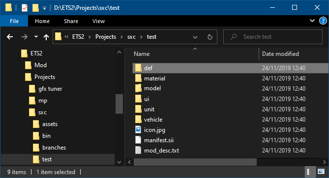
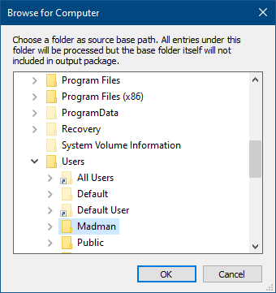
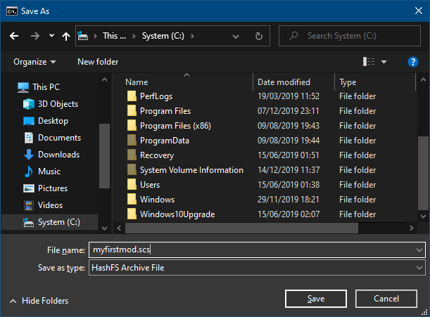
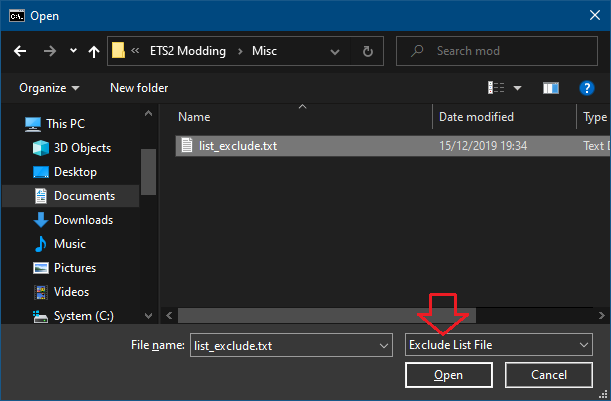

|
SXC PACKER A COMPANION TOOL FOR SXC exTRACTOR |
PrologueMost mod files for Euro Truck Simulator 2 and American Truck Simulator today are compressed and distributed using a standard ZIP file format. However, the game themselves pack their assets and data using SCS proprietary compressed package format called HashFS (Hash File Format). SCS—fortunately, support and allows mod file to be packed using this proprietary file format. There are known a small amount of modders packing their mod using this format. In fact, SCS Software as the game developer does not provides official tool to pack mod file into HashFS format. Came from that reason, the SXC Packer was written and the HashFS formatted mod file should no longer exclusive to a particular modder or group.SXC Packer (can be pronounced as Sexy Packer) intended to compress and pack Euro Truck Simulator 2 and American Truck Simulator mod file in a new way. It allows to compress whole sub-items within a folder, exclude certain folders and files, hide folders and files from HashFS directory structures, and encrypt certain unit (*.sii) files. SXC Packer however does not provide ability to extract or decompress. As its name says it just a packer tool. if you have problem, find bug, or just want to say hi. Basic Usage
Basic UsageAbout the ProgramSXC Packer is a console program runs under Microsoft Windows. It is a simple text based application. No fancy GUI and no bullsh*t. It comes without installer. SXC Packer is shipped together as addons with SXC Extractor. Extract the SXC Extractor package using any ZIP Archiver program onto a destination folder of your choice. SXC Packer is stored under addons → packer sub-folder. From Windows Explorer, press Shift + Right Click on the SXC Packer folder then choose a menu item labeled as "Open Command Prompt from here" or "Open Power Shell from here" depending on your Windows version. Running SXC Packer can be done by typing:sxcpack
Or under Power Shell console:
.\sxcpack.exe
After typing, press the Enter key on the keyboard to actually execute the
application. Running SXC Packer without any parameter will just display a
usage tips of parameter description, which will described more details below.
Working with Input FolderSXC Packer requires at least input folder in order to function. Items (files and folders) under this input folder will be processed, but the input folder itself will be excluded from the generated HashFS output file.To understand it, let's take a look at the following example image:  Here, we have a base folder D:\ETS2\Projects\sxc\test where contains 9 sub-items: consist of 3 files and 6 folders. If we use this base folder as SXC Packer input folder, only those 3 files with 6 folders and all their beneath sub-items will be processed. To select input folder from a dialog window, run SXC Packer with -i switch as parameter like this: sxcpack -i
Or:
.\sxcpack.exe -i
It will open a folder selection dialog window, for example:
 Select a folder of your choice then press OK button. If you press the Cancel button, SXC Packer will abort any further operation and display the usage text. The folder selection dialog by default will highlighted to the current folder where you run SXC Packer. To specify an input folder without opening dialog window, you can specify the folder path as a second argument after the -i switch, as follow: sxcpack -i D:\ETS2\Projects\sxc\test
Note the second argument is preceding with a space character. Each argument
must be separated with at least one space character. If an argument contains
spaces, you should enclose it with double-quotes. Take a look at this example
for input folder that containing spaces:
sxcpack -i "C:\My Mods\Trucks\Tic Tac Truck\"
In the case you specify root drive as input folder, SXC Packer will reject
it and informing an invalid operation error. There is no good reason why you
should packing the whole drive content (try backup tool for such purpose).
Here's the bad example:
sxcpack -i C:\
Compressed Result FileTo save the compressed result file into a choosen name, specify the -o switch into the arguments. For example:sxcpack -i C:\temp -o
Supplying the -o switch will bring a Save File dialog window:
 Type the output file name in edit box and click Save button. It is advisable to always use .scs extention following the file name. Pressing Cancel button will discard file name selection and the output file name will be taken from input folder name. For example: sxcpack -i "C:\My Best Mod" -o
If you press Cancel button on File Save dialog, the result of compressed
output file will be My Best Mod.scs and stored in SXC Packer folder.
To specify an output file without opening dialog window, you can specify the file name (with optional folder path) as a second argument after the -o switch, as follow: sxcpack -i C:\ETS2\mod\firstmod\ -o C:\ETS2\mod\myfirstmod.scs
Please keep in mind that SXC Packer will overwrite existing output file,
if exists.
Default Compression BehaviourBy default, all packed files will be compressed using the optimal compression ratios. However, starting at version 1.0.20.508, SXC Packer will automatically packing sound files in "store" (non-compressed) mode. These sound files are OggVorbis (*.ogg), FMOD Sound Bank (*.bank), and FMOD Sound Event Reference (*.soundref). To accomplish this feature, make sure to keep the file extension to allow SXC Packer recognize any presence of sound file format.If you want to customize certain files to be packed in "store" (non-compressed) mode, SXC Packer version 1.0.20.508 also introduce a new -s switch. The usage of this switch has been described in details at Non-Compressed Files and Folders section. Extended UsageExclude Files and FoldersSXC Packer provides ability to exclude certain files and/or folders so they will not included when generating output packed file. To understand how this function works, assuming we have a mod project located in D:\ETS2\Projects\sxc\test contains 3 files and 6 folders:Let say we want to exclude the unit folder, as well as manifest.sii file so they will not included in generated output file. To do this, create a blank ASCII text file (you can do this with Windows Notepad application) and put the files and folders we want to exclude: unit/
To define a folder, make sure to append a / (slash) or \ (backslash)
character after the folder name to distinguish them with file type. Please
note that SXC Packer will always ignore folder that defines the root of
your mod folder. For example:
manifest.sii /
The first line of the example above always ignored, because it doesn't make
sense to exclude the mod's root folder (whole mod file structures) which
mean you actually not creating a mod at all!
unit/ manifest.sii Excluding folder always affect to it's childs (sub-items) as they are also excluded entirely. You don't need to redefine sub-items to be excluded if their parent folder already there. From the following example, the last two lines is not actually neccessary (though it is possible) since their parent folder is defined already: def/
Exclude list definition allow defining items deep to the
lower hierarchy. Here an example of various file and folder hierarchy:
def/company/ def/company/quarry/out/ def/company/cont_port/out/
From the above example, it is possible to put blank lines as they will be
ignored. If defining exclude items is done, save the text document to a name
of your choice.
def/sign/atlas/ model/sign/misc/ model/sign/navigation/uk/ def/sign/boards.sii def/game_data.sii model/sign/security.dds model/sign/security.tobj manifest.sii SXC Packer only accept pure ASCII text file. If you are
using WIndows Notepad, make sure to select ANSI encoding
within Save File dialog window. Do not use foreign character set in defined
file and folder names.
If—for example, you save the text file as C:\temp\list_exclude.txt,
put it as SXC Packer argument after the -x switch. For example:
sxcpack -i D:\ETS2\Projects\sxc\test -o C:\temp\mymod.scs -x C:\temp\list_exclude.txt
You can also provide the -x switch without
specifying file name, for example:
sxcpack -i D:\ETS2\Projects\sxc\test\ -o C:\temp\mymod.scs -x
In this case, an Open File dialog window will show up. Browse and select the
text file created previously then press Open button. To distinguished
from opening file for exclude, hidden, and encrypt text file, look at the file
type drop-down list next to file name edit box in Open File dialog (see below
image marked with red down arrow). If you press Cancel button, exclude
list will ignored during output file creation.
 Hide Files and FoldersSXC Packer provides ability to hide certain files and/or folders so they will not included in the directory structure of the output file. Hiding files and folders comes useful if you want to 'obfuscate' them against normal extraction. Be careful that NOT all files and folders can be hidden. You need to test your mod file first in the case certain files indicated 'missing' in the game's log file.Assuming we have a mod project located in D:\ETS2\Projects\sxc\test contains 3 files and 6 folders: Let say we want to hide the model and vehicle folder, as well as manifest.sii, mod_desc.txt, and icon.jpg files so they will not included in directory structure of the generated output file. To do this, create a blank ASCII text file (you can do this with Windows Notepad application) and put the files and folders we want to hide: model/
To define a folder, make sure to append a / (slash) or \ (backslash)
character after the folder name to distinguish them with file type. Hiding
folder always affect to it's childs (sub-items) as they are also hide
entirely. You don't need to redefine sub-items to be hide if their parent
folder already there. From the following example, the last two lines is not
actually neccessary (though it is possible) since their parent folder is
defined already:
vehicle/ manifest.sii mod_desc.txt icon.jpg model/
It is possible to hide your entire mod file structure, by defining just your
mod's root folder like this:
model/building/ model/building/administration/car_dealer.dds /
If defining hidden items is done, save the text document to a name
of your choice.
SXC Packer only accept pure ASCII text file. If you are
using WIndows Notepad, make sure to select ANSI encoding
within Save File dialog window. Do not use foreign character set in defined
file and folder names.
If—for example, you save the text file as C:\temp\list_hidden.txt,
put it as SXC Packer argument after the -h switch. For example:
sxcpack -i D:\ETS2\Projects\sxc\test\ -o C:\temp\mymod.scs -h C:\temp\list_hidden.txt
You can also provide the -h switch without
specifying file name, for example:
sxcpack -i D:\ETS2\Projects\sxc\test -o C:\temp\mymod.scs -h
In this case, an Open File dialog window will show up. Browse and select the
text file created previously then press Open button. If you press
Cancel button, hidden list will ignored during output file creation.
Encrypt Unit FilesSXC Packer provides ability to encrypt certain files and/or folders. Encrypt files and folders comes useful if you want to 'obfuscate' their content against normal extraction. Please note that only Unit files (.sii) or folder containing unit files will be encrypted. Why only unit file? Because it's the game's limitation and SXC Packer can do nothing with that.Let say we want to hide all *.sii files under the ui folder, as well as game_data.sii and economy_data.sii files under the def folder so their content will be encrypted in the generated output file. To do this, create a blank ASCII text file (you can do this with Windows Notepad application) and put the files and folders we want to encrypt: ui/
To define a folder, make sure to append a / (slash) or \ (backslash)
character after the folder name to distinguish them with file type. Encrypting
folder always affect to it's childs (sub-items) as they are also encrypted
entirely. You don't need to redefine sub-items to be encrypted if their parent
folder already there. From the following example, the last two lines is not
actually neccessary (though it is possible) since their parent folder is
defined already:
def/game_data.sii def/economy_data.sii def/
You can't—however, define mod's root folder in the purpose to encrypt
whole *.sii files in your mod project. This is SXC Packer restriction. The
first line in the following example will be ignored:
def/world/ def/world/traffic_rules.sii /
If defining encrypted items is done, save the text document to a name
of your choice.
def/ def/world/ def/world/traffic_rules.sii SXC Packer only accept pure ASCII text file. If you are
using WIndows Notepad, make sure to select ANSI encoding
within Save File dialog window. Do not use foreign character set in defined
file and folder names.
If—for example, you save the text file as C:\temp\list_encrypt.txt,
put it as SXC Packer argument after the -e switch. For example:
sxcpack -i D:\ETS2\Projects\sxc\test -o C:\temp\mymod.scs -e C:\temp\list_hidden.txt
You can also provide the -e switch without
specifying file name, for example:
sxcpack -i D:\ETS2\Projects\sxc\test -o C:\temp\mymod.scs -e
In this case, an Open File dialog window will show up. Browse and select the
text file created previously then press Open button. If you press
Cancel button, encrypted list will ignored during output file creation.
Non-Compressed Files and FoldersStarting at version 1.0.20.508, SXC Packer provides ability to allow certain folders and files to be packed in "store" (non-compressed) mode. These non-compressed entries then read or streamed directly by the game without having to store them into uncompressed form in caches.Sound files with *.ogg, *.bank, and *.soundref extension will be automatically
packed in "store" (non-compressed) mode. No need to includes these kind of
files into the definition file.
Assuming we have a mod project located in D:\ETS2\Projects\sxc\test
contains 3 files and 6 folders:
Let say we want all files under the def folder to be packed in non-compressed form, as well as icon.jpg file. To do this, create a blank ASCII text file (you can do this with Windows Notepad application) and put the files and folders to be packed in non-compressed form: def/
To define a folder, make sure to append a / (slash) or \ (backslash)
character after the folder name to distinguish them with file type. Defined
folder will also affect to it's childs (sub-items). You don't need to redefine
sub-items if their parent folder already there. From the following example,
the last 3 lines is not actually neccessary (though it is possible) since
their parent folder is defined already:
icon.jpg def/
It is possible to pack entire mod files in non-compressed form, by defining
just your mod's root folder like this:
def/world/ def/sound_player.sii def/world/sound_item_data.sii /
If defining non-compressed items is done, save the text document to a name
of your choice.
SXC Packer only accept pure ASCII text file. If you are
using WIndows Notepad, make sure to select ANSI encoding
within Save File dialog window. Do not use foreign character set in defined
file and folder names.
If—for example, you save the text file as C:\temp\list_stored.txt,
put it as SXC Packer argument after the -s switch. For example:
sxcpack -i D:\ETS2\Projects\sxc\test\ -o C:\temp\mymod.scs -s C:\temp\list_stored.txt
You can also provide the -s switch without
specifying file name, for example:
sxcpack -i D:\ETS2\Projects\sxc\test -o C:\temp\mymod.scs -s
In this case, an Open File dialog window will show up. Browse and select the
text file created previously then press Open button. If you press
Cancel button, hidden list will ignored during output file creation.
EpilogueThe author of SXC Packer has no relation and is not affiliated with SCS Software. SXC Packer is made by user for users, in the hope it comes useful and handy for modders. Have fun, keep trucking, and happy modding!Revised: December 10, 2022 |